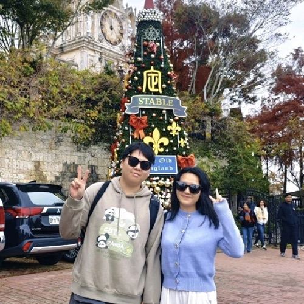

THE SHORT VERSION
I make complicated things a little less mysterious.
I started in software engineering, wandered through computer science, and somehow ended up teaching navigation systems to be more honest about uncertainty.
HELLO FROM HONG KONG
Curious by default.
Building with purpose.
A software person, PhD student, and professional asker of “wait… but why?”

I’ve taken a pleasantly indirect route from writing software to thinking about how machines understand where they are.
THE SHORT VERSION
I started in software engineering, wandered through computer science, and somehow ended up teaching navigation systems to be more honest about uncertainty.
WHERE I AM
Usually somewhere between a terminal, a whiteboard, and the next interesting question.
TODAY’S BRAIN TAB
Can a navigation system know when it might be wrong?
FIND ME AROUND THE INTERNET
Shaanxi Normal University
Xi’an, China · where the story startedCity University of Hong Kong
Hong Kong · a master’s and a new directionThe Hong Kong Polytechnic University
PhD @ IPNL · currently in progress...How do we build positioning systems that are accurate, explainable, and honest when the city makes satellite signals misbehave?
Liang Qian, Penggao Yan, Penghui Xu, and Li-Ta Hsu
Read the paper ↗Liang Qian and X. Luo
View on Scholar ↗YOU MADE IT ALL THE WAY HERE!